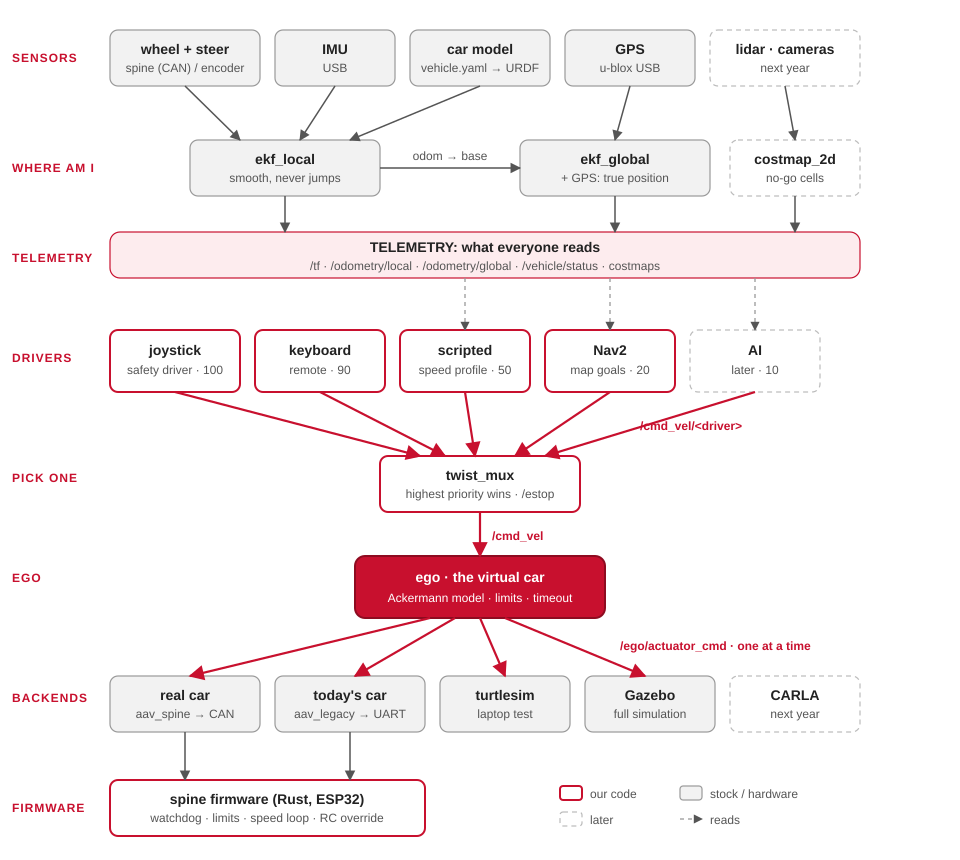

One card for every ROS package in src/ and every crate and board in firmware/. Each
card answers the same nine questions. Packages is the short version, in
tables; this page goes deeper. Written on 15 October 2026, with the topic names by area
(Topic areas).

How to read a card
| Row | Answers |
|---|---|
| Does | what it does, in one sentence |
| Why | why the car needs it |
| Runs on | which computer, from the machine files in src/aav_bringup/config/machines/ |
| In → out | topics, frames, CAN frames, serial ports |
| Origin | ours (2026-27), stock (a ROS package), or inherited (from which repo: see its PROVENANCE.md) |
| Status | works ran (where), untested never ran, stub a placeholder, missing not written |
| Run alone | the one command that starts just this |
| Test | how to check it |
| Read first | the one file to open first |
"(guess)" marks what the code doesn't say for sure. Status follows Status.
Contents
| Layer | Modules |
|---|---|
| Sensors | aav_sensors, aav_imu_yahboom, battery_monitor, ti_ros2_driver |
| Description and localization | aav_description, aav_localization |
| Drivers | aav_teleop, aav_scripted, aav_goto, aav_language, aav_navigation |
| Mux and ego | aav_mux, aav_io_mux, aav_ego |
| Backends | aav_spine, aav_legacy, aav_turtlesim, aav_gazebo, aav_carla |
| Perception | aav_yolo, aav_radar_clusters, aav_lane_finder, aav_lane_geometry |
| HUD | aav_hud, aav_hud_raylib |
| Bench | aav_spine_sim, aav_bench |
| Messages and bringup | aav_interfaces, aav_bringup |
| Firmware: the spine (Rust) | can/aav.dbc, spine-core, aav-inputs, jrk-g2, ad5311, pca9555, ibus, mcp2515, legacy-link, spine-board, boards/esp32-umod, boards/pico2 |
| Firmware: the other Pico 2s (Rust) | wheel-encoder, boards/wheel-encoder-pico2, sentinel, hd44780, boards/sentinel-pico2 |
| Firmware: today's boards (C++) | aav_umod_esp32 |
Sensors
aav_sensors
| Does | starts the sensor drivers (IMU, GPS, radar, battery, cameras) with the car's settings |
| Why | one launch file per computer, so each sensor starts the same way everywhere |
| Runs on | whichever computer the sensor is plugged into: the Orin's file turns on IMU and GPS (both still TODO: which USB?) |
| In → out | /dev/aav/imu, /dev/aav/gps, /dev/aav/radar_*, /dev/aav/battery, /dev/aav/camera_* → /sensors/imu/data, /sensors/gps/fix, /sensors/radar/points, /vehicle/battery, /sensors/camera/front_left/image_raw |
| Origin | ours; it starts stock drivers (ublox_gps, nmea_navsat_driver, ublox_dgnss, imu_filter_madgwick, usb_cam). The camera calibrations are the 2024-25 cameras repo's |
| Status | untested needs the devices |
| Run alone | ros2 launch aav_sensors sensors.launch.py imu:=true gps:=true radar:=false battery:=false |
| Test | on the car: ros2 topic hz /sensors/gps/fix and /sensors/imu/data |
| Read first | launch/sensors.launch.py (its docstring lists every option) |
aav_imu_yahboom
| Does | reads the Yahboom 10-axis IMU over USB serial and publishes it, in Rust (rclrs) |
| Why | ekf_local needs the turn rate; the wheels can't give it |
| Runs on | the computer the IMU is plugged into (Orin, guess) |
| In → out | /dev/aav/imu → /sensors/imu/data_raw (Imu, imu_link), /sensors/imu/mag (raw counts, not tesla: unused) |
| Origin | ours (Ben): a rewrite of the 2025-26 C++ driver (yahboom-IMU @ 95469f1a63), which it replaced on 11 Oct. Two crates: yahboom-protocol (frames, no ROS) and imu-node (the node) |
| Status | works its protocol tests, and the C++ driver's recorded answers, bit for bit. untested on a real IMU |
| Run alone | ros2 launch aav_sensors sensors.launch.py gps:=false |
| Test | cargo test -p yahboom-protocol (in tools/test.sh) |
| Read first | crates/yahboom-protocol/src/lib.rs, then PROVENANCE.md |
battery_monitor
| Does | reads the Victron battery monitor (VE.Direct text, 19200 baud) and publishes volts, amps and charge |
| Why | the HUD shows the battery; a flat battery explains odd driving |
| Runs on | not in any machine file yet (battery: false) |
| In → out | /dev/aav/battery → /vehicle/battery (BatteryState), /vehicle/battery/heartbeat (String) |
| Origin | inherited: 2024-25 Battery-Monitor-ROS; two start-up crashes fixed |
| Status | untested needs the device |
| Run alone | ros2 run battery_monitor battery_monitor --ros-args -p port:=/dev/ttyUSB0 |
| Test | only the stock style tests (colcon test) |
| Read first | battery_monitor/battery_monitor.py |
ti_ros2_driver
| Does | sends a config to the TI IWR6843AOP mmWave radar and publishes its points |
| Why | sees obstacles ahead, for Nav2's costmap and the collision monitor |
| Runs on | not in any machine file yet (radar: false) |
| In → out | /dev/aav/radar_cmd, /dev/aav/radar_data → /sensors/radar/points (PointCloud2, radar_link, best effort) |
| Origin | inherited: 2025-26 Nav_Radar @ 6242631882 |
| Status | untested on the radar; its configs are indoor demos. Its mock_radar_publisher works |
| Run alone | ros2 launch aav_sensors sensors.launch.py radar:=true imu:=false gps:=false |
| Test | ros2 run ti_ros2_driver mock_radar_publisher stands in for it |
| Read first | ti_ros2_driver/pc_publisher.py |
Description and localization
aav_description
| Does | holds the car's measurements (vehicle.yaml) and its model (URDF), and publishes the car's frames |
| Why | every other part needs to know where the wheels, sensors and bumpers are |
| Runs on | the Orin |
| In → out | vehicle.yaml, /vehicle/joint_states → /robot_description, /tf_static (base_link, imu_link, gps_link, radar_link, cameras), /tf |
| Origin | ours |
| Status | works but the numbers are guesses until the car is measured (Q1) |
| Run alone | pixi run view (RViz shows the model) |
| Test | test/test_vehicle.py (in tools/test.sh) |
| Read first | config/vehicle.yaml, then aav_description/vehicle.py |
aav_localization
| Does | settings for robot_localization: two EKFs and navsat_transform |
| Why | answers "where is the car?": smoothly for steering, truly for planning |
| Runs on | the Orin |
| In → out | /vehicle/odom, /sensors/imu/data, /sensors/gps/fix → /localization/odom/local, /localization/odom/global, /localization/gps/odom, /localization/gps/fix; TF odom → base_link, map → odom |
| Origin | stock robot_localization, our settings. Replaces 2025-26 Odometry |
| Status | works turtle, Gazebo, bench, replay. The datum in navsat.yaml is a placeholder |
| Run alone | ros2 launch aav_localization localization.launch.py (with a backend and the sensors) |
| Test | pixi run check sim; replay a bag (Simulation) |
| Read first | config/ekf_local.yaml; why there are two: Topic areas |
Drivers
aav_teleop
| Does | the joystick as a driver, plus one button as an e-stop |
| Why | the safety driver must always be able to take over (priority 100) |
| Runs on | the safety driver's laptop (laptop.yaml) |
| In → out | the USB receiver → /drivers/joy/joy → /drivers/joy/cmd_vel (TwistStamped, while the deadman is held), /safety/estop |
| Origin | stock joy, teleop_twist_joy, joy_teleop; our settings. The button map from 2025-26 joy_teleop_ackerman |
| Status | untested no real joystick yet; the button numbers are TODO |
| Run alone | ros2 launch aav_teleop teleop.launch.py |
| Test | with pixi run turtle running: hold the deadman, watch the turtle |
| Read first | config/teleop_twist_joy.yaml |
aav_actuator_tests
| Does | runs the stage-3 and stage-4 tests (steering, speed up, coast, brake, circles, straight), logs them, prints the numbers for vehicle.yaml |
| Why | fill vehicle.yaml's actuators: with measured numbers, so Gazebo moves like the car |
| Runs on | the laptop on the car's network (or the Mac with Gazebo) |
| In → out | the car's readings, /safety/estop, /system/source → /drivers/tests/cmd_vel (priority 60) |
| Origin | ours |
| Status | works Gazebo, all 9 tests (15 Oct); untested on the car |
| Run alone | pixi run actuator-test --list; pixi run actuator-test speed-up --sim |
| Test | test/ (in tools/test.sh): the maths, the safety rules, and each test on a pretend car |
| Read first | Actuator tests, then aav_actuator_tests/procedures.py |
aav_scripted
| Does | an action that drives a fixed speed plan: speed up, hold, slow down |
| Why | the first repeatable test drive on the car (phase 1) |
| Runs on | the Orin |
| In → out | the action /scripted_drive, /localization/odom/local → /drivers/scripted/cmd_vel |
| Origin | ours |
| Status | works turtle and bench |
| Run alone | ros2 launch aav_scripted scripted.launch.py, then the ros2 action send_goal in its docstring |
| Test | test/test_speed_profile.py (in tools/test.sh) |
| Read first | aav_scripted/speed_profile.py |
aav_goto
| Does | an action that drives to one point B (lat/lon or map x/y) and stops there: speed up gently, hold, slow down by the distance left at half the measured braking |
| Why | the main goal (Ben, 15 Oct): GPS A to B with a smooth stop, READ-ME-TESTS 5.2 |
| Runs on | the Orin, next to the mux |
| In → out | the action /goto, /localization/odom/global, /sensors/gps/fix → /drivers/goto/cmd_vel (twist_mux priority 25) |
| Origin | ours |
| Status | works in Gazebo (pixi run sim-check --goto, 15 Oct); untested on the car |
| Run alone | pixi run sim, then pixi run goto --sim --ahead 20 |
| Test | test/ (in tools/test.sh): the speed plan, the steering, the rules, whole drives on a pretend car |
| Read first | A to B, then aav_goto/approach.py and line.py |
aav_language
| Does | plain English to a plan of drive tools, through a local model; drives after a typed yes |
| Why | Ben, 15 Oct: type what we want in plain English, like "drive 100m forward" |
| Runs on | a Mac with Apple silicon (the model); the drive server anywhere with ROS |
| In → out | your words → MCP → /scripted_drive, /follow_gps_waypoints, /safety/estop (true only) |
| Origin | ours; the ReAct design from Ben's SYSC 4415 A3 and mcpsearch |
| Status | works Gazebo and turtle; untested bench and car |
| Run alone | pixi run -e llm talk --fake (no ROS); pixi run -e llm llm-eval (the model test) |
| Test | test/ (in tools/test.sh): the distance maths, every safety rule, the ReAct loop |
| Read first | Plain English, then aav_language/drive_tools.py |
aav_navigation
| Does | Nav2 set up for a car: SmacPlannerHybrid, MPPI (or Regulated Pure Pursuit), costmaps, the collision monitor, and the maps |
| Why | drives to a goal or along GPS waypoints, around obstacles |
| Runs on | the Orin |
| In → out | /localization/odom/local, TF, /map, /goal_pose, /sensors/radar/points, /perception/camera_obstacles → /drivers/nav/cmd_vel, /plan, /safety/collision_monitor/state |
| Origin | stock Nav2; our settings. Replaces 2025-26 Navigation_PathPlanning_ObstacleAvoidance and Obstacle_Avoidance_logic |
| Status | works goals in Gazebo, 40 m on the bench. Open: the weave (N7) |
| Run alone | part of pixi run sim; alone: ros2 launch aav_navigation navigation.launch.py |
| Test | pixi run bench-check --obstacle |
| Read first | config/nav2.yaml, then Costmaps |
Mux and ego
aav_mux
| Does | twist_mux's settings: picks the highest-priority driver, with an e-stop lock and a stop-sign lock |
| Why | many drivers, one car: exactly one command must win |
| Runs on | the Orin |
| In → out | every /drivers/<driver>/cmd_vel, /safety/estop, /perception/stop_sign → /control/cmd_vel |
| Origin | stock twist_mux; our settings. Replaces 2025-26 Real-Time-OS's command picking |
| Status | works |
| Run alone | ros2 launch aav_mux mux.launch.py |
| Test | pixi run estop while the turtle drives |
| Read first | config/twist_mux.yaml (the priorities) |
aav_io_mux
| Does | the sensor mux checks that every sensor comes from one source (source:=); the output mux sends ego's command to one target (target:=), the real car only while every source is REAL |
| Why | simulated data must never drive the real car (S-4) |
| Runs on | the Orin, next to ego |
| In → out | /ego/actuator_cmd, /system/source, the ROS graph → /control/<target>/actuator_cmd, /system/sensor_mux/state, /safety/output_mux/state |
| Origin | ours (the proposal's sensor and output muxes) |
| Status | works in its tests and in every profile; untested on the car |
| Run alone | ros2 launch aav_io_mux io_mux.launch.py target:=car |
| Test | test/test_provenance.py (in tools/test.sh), test/test_real_backend_guard.py (pixi run test) |
| Read first | aav_io_mux/provenance.py, then Sources and targets |
aav_ego
| Does | turns the chosen speed and turn rate into a speed and steering angle the car can do, with limits, ramps and a timeout |
| Why | the drivers never need to know which car they drive |
| Runs on | the Orin |
| In → out | /control/cmd_vel → /ego/actuator_cmd (AckermannDriveStamped, 50 Hz) |
| Origin | ours |
| Status | works 1.0 m/s cap, ±0.5 rad, stops 0.3 s after the last command |
| Run alone | ros2 launch aav_ego ego.launch.py |
| Test | test/test_ackermann.py (in tools/test.sh) |
| Read first | aav_ego/ackermann.py |
Backends
Exactly one runs at a time. Each reads ego's commands from the output mux, on its own
/control/<target>/actuator_cmd, and reports /vehicle/odom.
aav_spine
| Does | sends ego's commands to the spine board as CAN frames, and turns its replies into speed and status |
| Why | the future real car: one CAN bus between the Orin and the actuators. Today (role:=sensors, car.launch.py actuators:=uart): only reads the wheel sensors on the Orin's CAN bus, and sends nothing (Today's wiring) |
| Runs on | the Orin (spine: true in orin.yaml: the CAN bus is wired to it) |
| In → out | /control/car/actuator_cmd (or bench, gazebo), /safety/estop, /can/rx → /can/tx, /vehicle/odom, /vehicle/status, /vehicle/joint_states; service /spine/arm |
| Origin | ours; ros2_socketcan (stock, Linux only) puts the frames on the wire |
| Language | the node runs in Rust by default: aav_spine_bridge, on spine-core's CAN code. bridge:=python runs this package's Python one. Both read config/spine.yaml |
| Status | works on the bench against spine_sim, both languages. No spine board on the car yet |
| Run alone | ros2 launch aav_spine spine.launch.py [bridge:=rust\|python] |
| Test | test/test_can_codec.py, test_spine_bridge.py; the Rust: cargo test -p spine-bridge (the same cases, and the shared vectors); both: aav_io_mux's test_real_backend_guard.py, pixi run bench-check [--python-bridge] |
| Read first | aav_spine/can_codec.py, then firmware/can/aav.dbc |
aav_legacy
| Does | drives today's ESP32 with 13-byte UART frames, and turns the wheel encoder's UDP packets into speed |
| Why | it lets our stack drive the car as it is today, before the spine exists |
| Runs on | the Motor Pi (motor_pi.yaml): the ESP32 is wired to it, and the encoder sends only to it |
| In → out | /control/car/actuator_cmd, /safety/estop → serial /dev/ttyAMA0 (use /dev/serial0); UDP port 10111 → /vehicle/odom |
| Origin | ours, written for the 2025-26 protocols (AAV_cortex, Wheel_Encoders) |
| Status | untested on the car. The ESP32 has no command timeout: wheels off the ground first |
| Run alone | ros2 launch aav_legacy legacy.launch.py (on the Motor Pi) |
| Test | test/test_legacy_protocol.py (in tools/test.sh) |
| Read first | aav_legacy/legacy_protocol.py |
aav_turtlesim
| Does | drives the turtlesim turtle like a car (bicycle model) |
| Why | the fastest way to try a driver, the mux and ego on a laptop |
| Runs on | any laptop |
| In → out | /control/turtle/actuator_cmd, /turtle1/pose → /turtle1/cmd_vel, /vehicle/odom |
| Origin | ours, on stock turtlesim |
| Status | works |
| Run alone | pixi run turtle |
| Test | pixi run check turtle |
| Read first | aav_turtlesim/turtlesim_adapter.py |
aav_gazebo
| Does | puts Gazebo's simulated car behind the real car's topics, with an IMU and GPS; in the road world, a camera, a radar stand-in and (with lidar:=true) a roof lidar |
| Why | Nav2 and the EKFs can be tested with the same settings as on the car |
| Runs on | any laptop (headless on oirp-spss) |
| In → out | /control/gazebo/actuator_cmd, /gazebo/odom, /gazebo/imu, /gazebo/navsat, /gazebo/radar/points → /gazebo/cmd_vel, /vehicle/odom, /vehicle/status, /sensors/imu/data_raw, /sensors/gps/fix, /sensors/radar/points. The road world's bridges add /sensors/camera/front_left/*, /sensors/lidar/points and /vehicle/gazebo/truth |
| Origin | ours, on stock Gazebo Harmonic and ros_gz |
| Status | works headless on Linux and a Mac; its window on a Mac |
| Run alone | pixi run sim (gui:=false on a Mac) |
| Test | test/test_turn_rate.py, test_radar.py, test_worlds.py (colcon test only); pixi run check sim, pixi run sim-check |
| Read first | aav_gazebo/gazebo_adapter.py |
aav_carla
| Does | a CARLA car as the car: the same topics as Gazebo's, from CARLA's Python client |
| Why | photo-real towns and cameras; Carleton's streets from OpenStreetMap (CARLA) |
| Runs on | a Linux x86_64 computer that can reach a CARLA server (TCP 2000-2001); not a Mac |
| In → out | /control/carla/actuator_cmd, /safety/estop → odom, status, IMU, GPS, cameras, radar, lidar, /clock, /vehicle/carla/truth |
| Origin | ours (15 Oct); the axis rules follow carla-ros-bridge (MIT) |
| Status | untested built and tested without a server; never run against CARLA (Q31) |
| Run alone | ros2 launch aav_carla carla.launch.py host:=<server>; the whole stack: pixi run carla-car host:=<server> |
| Test | test/ (78, no CARLA needed: a pretend carla module); aav_bringup test_carla_launch.py |
| Read first | aav_carla/carla_adapter.py, then frames.py and link.py |
Perception
Perception has the details.
aav_yolo
| Does | three nodes: detector (YOLO on camera pictures), stop_sign_watcher (locks the mux at a close stop sign), camera_obstacles (boxes as points on the road for Nav2) |
| Why | the car must stop at stop signs, and see people and cars |
| Runs on | the detector: the Orin (TensorRT, after the reflash) or a laptop (Core ML); the watcher: the Orin |
| In → out | /sensors/camera/front_left/image_raw → /perception/detections → /perception/stop_sign, /perception/camera_obstacles, /perception/camera_view |
| Origin | inherited, rewritten: 2024-25 camera_ros2_ws (and camera_Yolo_detection for training/) |
| Status | works on the bench, with the stock YOLO model. The team's trained model is lost |
| Run alone | pixi run get-models, then pixi run detect picture:=src/perception/aav_yolo/test/stop_sign.jpg |
| Test | test/ (in tools/test.sh); pixi run bench-check --perception |
| Read first | aav_yolo/stop_sign.py |
aav_radar_clusters
| Does | groups the radar's points into objects (DBSCAN), with a box round each, in Rust (rclrs) |
| Why | turns a cloud of radar points into "something is there" |
| Runs on | with the radar (radar_clusters: false on the car for now); always on the bench and in Gazebo's road world |
| In → out | /sensors/radar/points → /perception/radar/clusters, /perception/radar/cluster_boxes |
| Origin | ours: a rewrite of the 2025-26 C++ node (Nav_Radar @ 6242631882), which it replaced on 15 Oct. Two crates: radar-clustering (DBSCAN, boxes, cloud bytes; no ROS) and clusters-node |
| Status | works on the bench and in Gazebo; the C++ node's answers for 94 clouds, bit for bit. untested on the real radar |
| Run alone | ros2 launch aav_radar_clusters radar_clusters.launch.py mock:=true minimum_points:=5 radar_rviz:=true |
| Test | cargo test -p radar-clustering (in tools/test.sh); pixi run bench-check --obstacle |
| Read first | crates/radar-clustering/src/lib.rs, then PROVENANCE.md |
aav_lane_finder
| Does | finds the lane lines in the front camera's picture (classic OpenCV, no model) |
| Why | lane keeping needs to know where the car sits in its lane |
| Runs on | with the camera (lane: false everywhere: it drives whenever it sees a lane) |
| In → out | /sensors/camera/front_left/image_raw, .../camera_info → /perception/lane/geometry, /perception/lane/image |
| Origin | ours (11 Oct): the 2025-26 lane finder was never in their repo |
| Status | works on the bench's pretend road; never on a real picture |
| Run alone | ros2 launch aav_lane_finder lane_finder.launch.py |
| Test | test/ (in tools/test.sh); pixi run bench-check --lane |
| Read first | aav_lane_finder/lane_lines.py |
aav_lane_geometry
| Does | control_interface: steers back to the lane's centre, as the AI driver; also the LaneGeometry message |
| Why | the steering half of lane keeping |
| Runs on | with the lane finder |
| In → out | /perception/lane/geometry → /drivers/ai/cmd_vel (priority 10), /drivers/ai/lane_status, /drivers/ai/lane_state |
| Origin | inherited: 2025-26 Lane_Detection_ROS2 @ 345285860e; renamed, publishes TwistStamped |
| Status | works on the bench, with aav_lane_finder |
| Run alone | ros2 launch aav_lane_geometry lane_follower.launch.py fake:=true (a pretend straight lane) |
| Test | pixi run bench-check --lane |
| Read first | scripts/control_interface.py |
HUD
HUD has the details.
aav_hud
| Does | the Flutter touchscreen app's back end: a ROS node with a web server (Flask, Socket.IO) |
| Why | the passenger sees speed, map and camera, picks a route, and has an e-stop button |
| Runs on | the DASH-UI Pi (guess) |
| In → out | /vehicle/status, /localization/gps/fix, /perception/stop_sign, /vehicle/battery, the camera → app events on 127.0.0.1:5000; the app → /safety/estop, Nav2's /follow_gps_waypoints |
| Origin | inherited, rewritten: 2025-26 User-Interface @ e6e6b1e565 (maincar) |
| Status | works on the bench: the app's e-stop stops the car in 0.3 s. untested on the car's screen |
| Run alone | ros2 launch aav_hud hud.launch.py |
| Test | test/ (in tools/test.sh); pixi run hud-test for the app |
| Read first | aav_hud/hud_server.py |
aav_hud_raylib
| Does | the in-car screen in Rust: one raylib window that is also the ROS node hud |
| Why | to replace the Flutter app and its back end with one program (Ben, 11 Oct) |
| Runs on | the dash screen (guess); today a Mac |
| In → out | /vehicle/status, /sensors/gps/fix, /localization/gps/fix, /perception/stop_sign, /vehicle/battery, the camera → the screen; the button → /safety/estop (only true) |
| Origin | ours. Two crates: hud-core (logic, no ROS) and hud-app (window and node) |
| Status | works on a Mac, alone and next to the bench. untested on a Pi and the car |
| Run alone | pixi run hud-demo (pretend data), pixi run hud (the node) |
| Test | cargo test -p hud-core (in tools/test.sh) |
| Read first | crates/hud-core/src/lib.rs |
Bench
Bench mode has the details.
aav_spine_sim
| Does | runs the spine's real firmware logic (spine-core) on a laptop, driving a model car |
| Why | tests the whole CAN path with no hardware |
| Runs on | any laptop, in pixi run bench |
| In → out | /can/tx, /vehicle/bench/hw_estop, /vehicle/bench/driver_faults → /can/rx, /vehicle/bench/truth |
| Origin | ours (Rust): crates bench-car (the model, no ROS) and spine-sim (the node) |
| Status | works |
| Run alone | pixi run bench |
| Test | cargo test -p bench-car; pixi run bench-check |
| Read first | crates/bench-car/src/plant.rs |
aav_bench
| Does | pretend IMU, GPS, battery, camera and radar, worked out from where the model car really is |
| Why | the real drivers' topics without the devices |
| Runs on | any laptop, in pixi run bench |
| In → out | /vehicle/bench/truth → the same topics the real drivers publish |
| Origin | ours |
| Status | works |
| Run alone | pixi run bench |
| Test | test/ (in tools/test.sh) |
| Read first | aav_bench/sensors.py |
Messages and bringup
aav_interfaces
| Does | our own message and action: VehicleStatus, ScriptedDrive |
| Why | the car's state (mode, armed, e-stop, faults) has no stock message |
| Runs on | every computer (it's a build dependency) |
| In → out | none: definitions only |
| Origin | ours |
| Status | works builds |
| Run alone | ros2 interface show aav_interfaces/msg/VehicleStatus |
| Test | colcon build |
| Read first | msg/VehicleStatus.msg |
aav_bringup
| Does | the five profiles (turtle, sim, car, replay, bench), the machine files, the RViz layouts |
| Why | one command starts the right parts on each computer |
| Runs on | every computer: pixi run car <machine> |
| In → out | starts everything else |
| Origin | ours |
| Status | works turtle, sim, replay, bench. car comes up with no hardware; untested on the car |
| Run alone | pixi run car all |
| Test | test/test_car_launch.py (colcon test); pixi run check <profile> |
| Read first | config/machines/orin.yaml, then launch/car.launch.py |
Firmware: the spine (Rust)
colcon ignores firmware/. All crates are no_std and tested on a laptop with cargo test
in firmware/spine (part of tools/test.sh). Firmware and
Rust firmware have the details.
| Crate or file | Does | Why | Origin | Status | Read first |
|---|---|---|---|---|---|
can/aav.dbc |
the CAN contract: six frames between the Orin, the spine and the two wheel nodes | both sides must agree on every bit | ours | v0.2.0 (the KEFC plan), merged 15 Oct | aav.dbc, then test_vectors.json |
spine-core |
the spine's decisions: modes, arming, the 100 ms watchdog, speed loop (closed or open), encoder | the safety rules, testable without hardware | ours | works 70 tests, and the bench | src/lib.rs |
wheel-core |
a front wheel node's logic: Hall sensor pulses to speed, the WHEEL_SPEED frame | wheel speed for the odometry | ours | works 9 tests, and the bench | src/lib.rs |
aav-inputs |
debounced switches, an instant e-stop, counting with a lockout | clean inputs from noisy pins | ours | works tests | src/lib.rs |
jrk-g2 |
the Pololu Jrk G2 (steering 0x05, brake 0x04) over I2C | steering and brake | ours, from Pololu's guide and the 2025-26 bytes | works against mocks | src/lib.rs |
ad5311 |
the throttle DAC (0x0C) over I2C, capped at 700 | throttle | ours; the chip is a guess (Q13) | works against mocks | src/lib.rs |
pca9555 |
the I/O expander (0x20); P00 is the drive direction | forward or reverse | ours | works against mocks | src/lib.rs |
ibus |
the FlySky RC receiver's frames | the RC override | ours | works tests | src/lib.rs |
mcp2515 |
the MCP2515 CAN controller over SPI | a Pico 2 has no CAN of its own | ours | works against mocks | src/lib.rs |
legacy-link |
the Motor-Pi's 13-byte UART frames, and the Jrk and DAC targets the C++ set for them | the Rust ESP32 is a drop-in for the C++ | ours, from the 2025-26 ros2_handler.cpp |
works tests, and against the C++ itself | src/lib.rs, vectors.json |
spine-board |
the glue: devices ↔ spine-core, the Board trait any chip implements, the CommandLink trait (CAN or the UART) |
one loop for any chip (Q10-Q13) | ours | works against mocks | src/lib.rs |
boards/esp32-umod |
the spine on today's ESP32 control board (Embassy): the C++'s pins; the Motor-Pi's UART or CAN; a 100 ms watchdog | the C++'s replacement, in Rust (Ben, 15 Oct) | ours | untested builds, never flashed | src/main.rs, src/pins.rs |
boards/pico2 |
the spine's program for a Pico 2 (Embassy), with a 100 ms hardware watchdog | the first real board | ours | untested builds, never flashed | src/main.rs |
Run alone: cd firmware/spine && cargo test -p <crate>. The boards: pixi run esp-build (after pixi run esp-tools), pixi run spine-uf2.
Runs on: the spine microcontroller, on CAN (not chosen yet, Q10-Q17).
Firmware: the other Pico 2s (Rust)
The car's wheel encoder and status display, rewritten in Rust and Embassy on 15 Oct. They
replace the 2025-26 C++ (Wheel_Encoders @ f824e9d805, AAV_cortex @ 90de619e52), which
was deleted from this repo then and stays on GitHub. Same crates workspace as the spine.
boards/wheel-encoder-pico2 (and the crate wheel-encoder)
| Does | counts wheel spokes (8 per turn) and sends the count over Ethernet (W5500) every 100 ms |
| Why | the car's only speed sensor today |
| Runs on | a Pico 2 with a W5500 (WIZnet's Ethernet HAT) |
| In → out | two IR spoke sensors → UDP to the Motor Pi (192.168.1.193), port 10111, a big-endian int32: encoder_udp |
| Origin | ours, rewritten from the 2025-26 Wheel_Encoders; PROVENANCE.md |
| Status | untested builds, never flashed. The car's Pico 2 still runs the C++. One count is about 0.12 m |
| Run alone | pixi run wheel-uf2, then drag the file on; cargo test -p wheel-encoder |
| Test | wheel-encoder: 12 tests, with examples aav_legacy checks too (firmware/udp/wheel_encoder_vectors.txt) |
| Read first | crates/wheel-encoder/src/packet.rs, then boards/wheel-encoder-pico2/src/main.rs |
boards/sentinel-pico2 (and the crates sentinel, hd44780)
| Does | a status display: a 16x2 LCD with 13 pages, a 10-LED bar, an 8x8 matrix, a knob, a button and a buzzer, fed as an I2C device at 0x42 |
| Why | shows the car's state at a glance |
| Runs on | a Pico 2 |
| In → out | a 46-byte I2C telemetry packet → the display |
| Origin | ours, rewritten from the 2025-26 AAV_cortex (AAV_sentinel/); PROVENANCE.md |
| Status | untested builds, never flashed. Nothing in our stack sends it packets yet (question 3) |
| Run alone | pixi run sentinel-uf2; cargo test -p sentinel -p hd44780 |
| Test | sentinel: 40 tests (the packet, every page, the knob, the beeps); hd44780: 5 |
| Read first | crates/sentinel/README.md, then src/telemetry.rs |
Firmware: today's boards (C++)
Copied unchanged from the 2025-26 team (AAV_cortex @ 90de619e52). It runs the car today,
until the spine replaces it.
aav_umod_esp32
| Does | drives steering, brake and throttle from the RC receiver or from the Motor Pi's UART |
| Why | it is how the car drives today |
| Runs on | the SparkFun ESP32 MicroMod on the control board |
| In → out | RC (iBUS), UART 13-byte frames → I2C to two Jrk G2s, the DAC, the expander |
| Origin | inherited: 2025-26 AAV_cortex, branch 6-pico2-aav-firmware |
| Status | runs the car today. No command timeout; an update page with no password; ten more faults in Firmware. Its Rust replacement is boards/esp32-umod; this stays until that is proven on the car |
| Run alone | pixi run -e firmware legacy-esp32 builds it; don't flash before the audit |
| Test | none |
| Read first | src/modules/ros2_handler/ros2_handler.cpp |
Questions this page leaves open
| # | Question |
|---|---|
| 1 | Which computer runs the HUD: the DASH-UI Pi, or the Innoview screen's computer? |
| 2 | Is the IMU on the Orin's USB, or on a Pi? (the orin.yaml TODO) |
| 3 | Is the sentinel display on the car, and what feeds it? |
| 4 | Is battery_monitor's Victron on the car? |